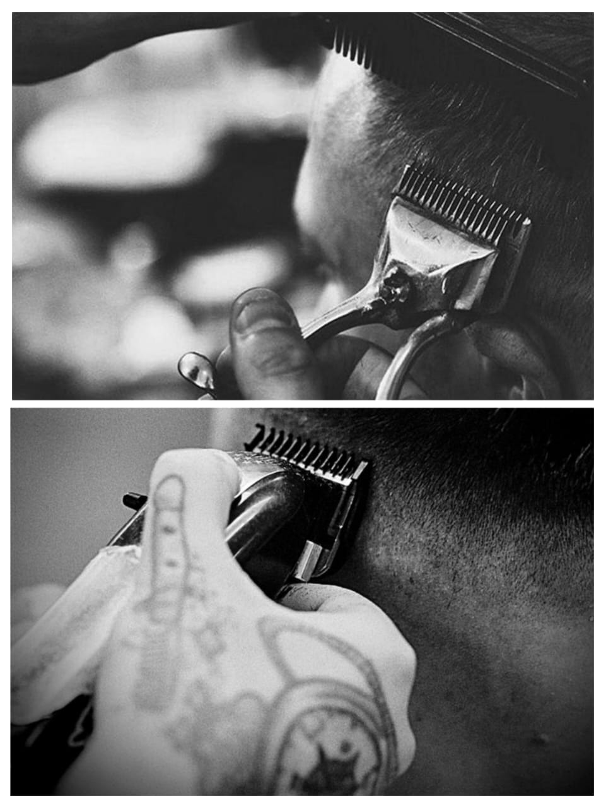

✂ BARBER SHOP

HISTORIA DE LA BARBERIA
La barbería, más que un oficio,
es considerada hoy día como una profesión con una historia de
más de 30 mil años. Uno de los primeros indicios de este
oficio data del antiguo Egipto, pues es sabido que miembros
de las más altas castas, como los sacerdotes, recibían
una especie de servicio de corte que no solo incluía el
cabello, sino algunos otros vellos del cuerpo.
Según la historia de la barbería, este oficio de tonsore
incluía tanto el arreglo y cuidado de la barba, y el cabello,
como la aplicación de productos que les permitía mejorar su
apariencia diaria.
EDAD MEDIA
Durante la Edad Media, la barbería se consolidó como un oficio esencial en la sociedad europea. Los barberos no solo se encargaban del corte de cabello y barba, sino que también realizaban procedimientos médicos menores, como sangrías y extracciones dentales. Esta dualidad de funciones llevó a que los barberos fueran vistos como figuras importantes en las comunidades, aunque con el tiempo, la práctica médica se separó de la barbería.

POSTE DE BARBERIA
El poste de barbería, conocido como "barber pole" en inglés, es un símbolo icónico de las barberías. Su origen se remonta a la Edad Media, cuando los barberos también realizaban procedimientos quirúrgicos. El poste, con sus colores rojo, blanco y azul, representaba la sangre y las vendas utilizadas en estos procedimientos. Hoy en día, el poste de barbería sigue siendo un símbolo de la profesión y se encuentra en muchas barberías alrededor del mundo.

BARBERIA EN LA ACTUALIDAD
Los barberos modernos se benefician de los avances tecnológicos que han revolucionado sus herramientas. Las cortadoras eléctricas actuales, como las de Supreme Trimmer, incluyen múltiples velocidades y diversos accesorios de cuchillas, lo que permite precisión y eficiencia. Las cortadoras y recortadoras inalámbricas de Supreme Trimmer ofrecen mayor maniobrabilidad y comodidad. Además, la introducción de cuchillas desechables de alta calidad y tijeras más ergonómicas ha simplificado muchos aspectos del proceso de peluquería. Las herramientas digitales, como las aplicaciones de reserva y los sistemas de pago digitales, también se han convertido en parte integral de la gestión de una barbería moderna.
